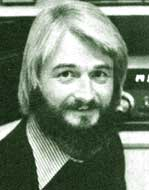

Copthorne Macdonald is the inventor of slow-scan television... a method of amateur radio transmission that allows ham operators to both hear and see each other during shortwave broadcasts.
All over the world, national governments control their own citizens' use of the radio spectrum. Everywhere, would-be users of electronic media must traverse a tangle of laws, bureaucratic regulations, and restrictive licensing procedures.
Why all this control? Government rhetoric usually justifies the regulation on the grounds that radio spectrum space is a valuable and limited resource, and thus must be "managed".
There is truth in this, of course, but that is not the whole truth. Governments also know that by managing any basic resource they exercise a large measure of control over the use to which that resource is put . . and thus (in this case) over the flow of information within the society.
There is no technical reason, for example, why we couldn't have oodles of low-power neighborhood AM, FM, and UHF-TV stations. But there are economic and political reasons why such a proliferation of outlets is not permitted. Your eyes and ears must be kept available for sale to a paying advertiser, after all! And the status quo is more easily maintained if those in power have a reliable daily conduit into millions of homes via the widely trusted network news broadcasts. All over the world, then, Big Media is safely "protected" by Big Money and/or Big Government. And government regulations don't permit much in the way of small media.
Down in the United States-where many of MOTHER's readers live-the Federal Communications Commission (FCC) regulates the airwaves. It calls the shots, issues the licenses, and polices the whole affair. (Fines up to $10,000, and prison terms up to a year, serve to deter any who might consider breaking U.S. communication law.) Licenses are required for almost all types of on-the-air activity, and some licenses-such as those for broadcast stations-are nowadays almost impossible to obtain. There are a few small loopholes, however, that just might be of interest to experimentally inclined MOTHER readers. These are the rare situations where no license at all is required to put yourself on the air as long as certain technical conditions are met.
The first of these situations involves the so-called FM wireless microphones available from outlets like Radio Shack. These "microphones" are actually small devices that contain both a sensitive microphone and a very-low-power transmitter, and they radiate a signal in the 88-108 MHz FM broadcast band. The FCC has decreed that these wireless mikes may be used only for one-way communication, and has limited the useful range of the devices to just over fifty feet (all of which makes this a tiny loophole indeed!). Still, an FM wireless microphone occasionally can be used to good advantage inside a single controlled area, such as an apartment building or institution.
A somewhat larger and more interesting loophole involves the AM broadcast band. The FCC permits low-power unlicensed transmitters in this band, provided that the power input does not exceed 100 milliwatts (0.1 watt), and the length of the antenna-plus ground lead-does not exceed 3 meters (9.81 feet).
These are severe restrictions. One hundred milliwatts is not much power, and even the most carefully designed 10'-long broadcast band antenna will be inefficient.
Nevertheless, some experimental work done by Ken Cornell (W2IM8) in this area of broadcasting is encouraging. Ken has used the AM loophole to carry on regular two-way CW (code) contacts with a friend living 3/4 mile away. He also reports that these code signals have been heard as far distant as 18 miles! If AM voice modulation is used instead of CW, and if the receivers used are ordinary AM transistor radios-of course-the usable range will drop off to significantly less than this . . . but perhaps still will be great enough to cover a city neighborhood.
Additional experiments are needed to see just what can be done with this idea. . . any urban folks want to give it a try?
What's needed is a 9.8-foot-long transmitting antenna with the highest possible efficiency. My own "first try" would be a 10-foot length of 4-inch-diameter plastic pipe, topped with a metal plate "capacity hat", and helically wound with enough heavy wire to make the whole affair resonant at the operating frequency. 1'd mount this antenna at ground level, rising vertically from a ground plane consisting of a 20 by 20-foot "blanket" of chicken wire fencing. (The individual strips of fencing would be soldered together, and the resulting blanket either laid directly on the ground or buried just under the sod.) Give the idea a try and let me know how it works out!
Yet another "loophole" provision of the U.S. regulations could be of particular interest to those of you living in rural areas of the United States. The FCC permits unlicensed operation between 160 and 190 kHz, on the condition that power input is limited to one watt and antenna length to 15 meters (49 feet) or less.
Since few North American receivers cover this particular "long-wave" band, experimenters often build simple frequency converters for use with their present receivers. In addition, some World War II surplus receivers-such as the BC-453-are still available, and are very inexpensive rigs for anyone starting from scratch.
Ken Cornell reports that the transmission range in this long-wave band, using AM voice transmission, is generally a few miles at most, and adds, "You will do better than using the 100-milliwatt CB transceivers . . . but not as well as the 5-watt CB base stations". The use of SSB voice modulation in this band can increase the range to 30 miles or more-under favorable conditions-and the use of CW will increase the range still further. By employing high quality receivers and good receiving antennas in relatively lownoise locations, CW contacts have been made at distances of several hundred miles. (The man-made noise problem is one reason why long-wave radio is primarily a rural game. In a densely populated city environment it's usually impossible to escape from radio noise sources, such as light dimmers and brushtype motors.)
A final possibility for "no license broadcasting" is the spectrum below 10 kHz . . . which is not regulated at all by the FCC. There are no limits whatever on transmitter power or antenna size down in this portion of the airwaves. The catch is that even physically large antennas are very "short" electrically at these frequencies. Any practical antenna is therefore extremely inefficient.
Detailed technical information (including simple transmitter and converter designs), the complete FCC rules on the subject, and lots of miscellaneous data about this whole fascinating subject are available in two volumes by Ken Cornell. They are The Low and Medium Frequency Radio Scrapbook ($6 .95) and Addendum '77/'78 for The Low and Medium Frequency Radio Scrapbook ($3 .95). Both are available-postpaid-from Ham Radio's Communication Bookstore, Greenville, New Hampshire 03048.
You should know, also, that a number of individuals interested in low frequency operation have formed the Longwave Club of America (Box 33188, Granada Hills, California 91344). Membership is $6.00 per year, and includes a subscription to their information-filled newsletter, The Low down.
Peace,
Cop Macdonald (VE1BFL)
99 Fitzroy St.
Charlottetown
Prince Edward Island
Canada C1A 1R6
New Directions Radio is an international network of radio amateurs concerned with ways of using ham radio (and related modes of communicating) that promote our own growth as individuals, and which we perceive as helping to create a more aware, more caring, and more responsible human society. We encourage all who share these interests to work with us. A current schedule of on-the-air activities is included in each bimonthly issue of New Directions Roundtable Newsletter published by Randy Brink (WDOHNF) and "Bo" Bogardus (W6HSE) as a service to the rest of us. Send one 159 stamp for each issue desired to: Randy Brink, Star Route 2280, Space 54, Woodland Park, Colorado 80863.
|
 |
|
|